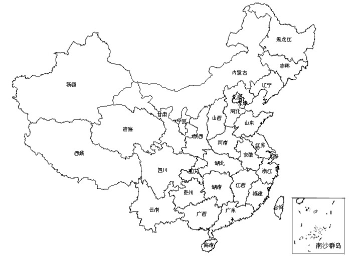

Macro
0.1
导论
第二章：宏观经济学的数据
中国宏观经济之旅：概况
第七章 劳动力市场
Macro
Docs
»
第二章：宏观经济学的数据
View page source
第二章：宏观经济学的数据
¶
上一章我们介绍了宏观经济学的基本框架。 下面我们要介绍的是经济学家最关心的一些事实和数据，或者说，用于创 建和检验经济学理论的宏观经济指标或变量。
本章集中关注经济学家和政策制定者最常用的三个经济统计数字:
国内生产总值
或 GDP，告诉我们一国的总收入及在产品和服务上的总支出。
消费者价格指数
或 CPI，衡量价格水平。
失业率
，告诉我们失业者占劳动力中的比例。
这些统计数字是如何计算的?它们告诉我们有关经济的哪些信息?
中国宏观经济之旅：概况
¶
国土面积：960 万
km^2
2014 年 GDP：636,463 亿元(63.65 万亿元)
2014 年人口：136,782 万人(13.68 亿)
